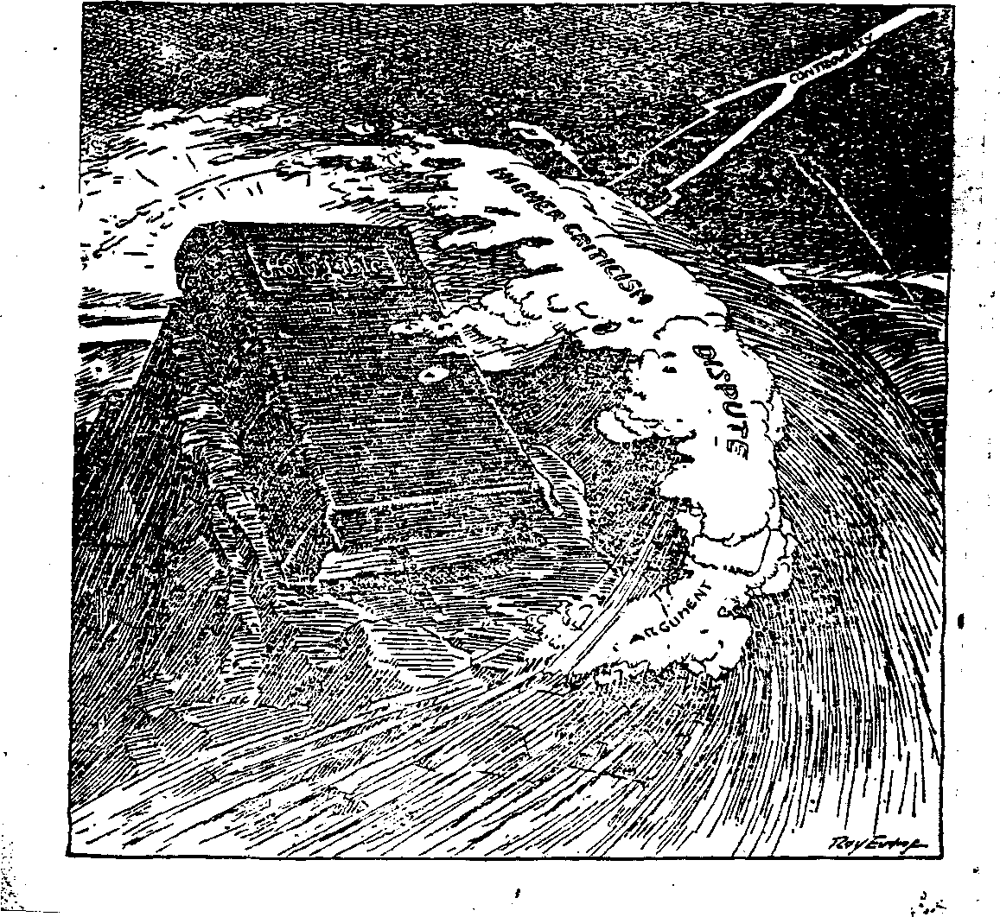

righteousness
ANTIQUES
RUST
A DIGEST OF WORLD NEWS
OLD ’VORLD DYING
BUSINESS AND WAGE STANDARDS
-DEFENSE DAY ENTHUSIASM
VoL VI Bi.Weekly . No. 133
October 22, 1924
MAN RESTORED
5$ a copy - $ 1-00 a Year Canada and Foreign Countries $ 1.50
NEV VORLD BEGINNING
Labob and Economics Digest o» Wotta News
Interesting Labor Items .............. . . 33
Social and Educational ANTTqCE3 AND THEIR SUPPOSED VALUE.........r , • 45
Finance—Commerce—Transpobtation Business—Wages—Standards
An Amun to Destroy the Grocers
Negroes Would Colouize Liberia.........>...33
Militarism Losing Out in Sweden.............35
Chippewa Indians of Minnesota Robbed
. Science and Invention
Rust and its Obutebation.............. .
Home and Health Star .............. ...... , . , . 51 ’' Travel and Miscellany
Railroad up Mount Ararat . . ..............35
Is St Peter’s in Danger of Falling? ...
The Moa or New Zealand (Illustrated)
- - Religion and Philosophy Rip Van Winki* Awakening......... . ... . 44
Pining for Real Manhood..................
Fiuim Generation to Generation (Cartoon)
What it Costs to be a Cardinal
Man Restored .................., , 59
Concerning Apostolic Succession.............62
Published every other Wednesday at 18 Coneord Street, Brooklyn, N. Y, tj. 3. A^ by WOODWORTH. HUDGINGS A MARTIN
Copartner! and Proprietor! Addrau: II Concord Street, Brooklyn, ,V. T., U. S. A.
CLAXTON J. WOODWORTH . . . Editor . ROBERT J. MABTIN . Buaineaa Msnaser
WM. y. HUDGING3 . . Sec*y and Trees.
Kiva Cssts a Copt—*1.00 a Yeas Maks RaMinANCsa to TEE GOLDEN AGE
Foastax Orness: British.....34 Craven Terrace, Lancaster Gate, Loudon W. 2
Canadian ......... 3S-40 Irwin Avenue. Toronto, Ontario
Auitralanian ....... 400 Collins Street, Melbourne, Australia
South African......0 Leite Street. Cape Town. South Africa
Katarad an saeond-clasa matter at Brooklyn, N. X., under the Act of March 3, 1879
>
Val£d« VI Brooklyn, N.Y., Wednesday, October 22. 1924 Nwaber 133 .
— - II -in-1 !■ II -n--W=—=====E__—=M===__==—sscskxssasKsctsaanaa "
A Digfest of World News
Radiocast from WATCHTOWER WBBR on, a wave length of 273 meters, by the Editor]
__ Helping the Boys to See Alaska
ANY boy who will personally earn $125 in the next year, and who can borrow $125 from his parents, may borrow a third $125 from George E. Buchanan of Detroit, Mich., and be taken next July by Mr. Buchanan through the Canadian Rockies to Alaska and points on the Canadian Yukon and return. Subsequently the boy returns the $125 to Mr. Buchanan, so that Im can help some other boy to take the same trip.
AN ATTEMPT is being made by Armenians to procure funds for the building of a scenic railway to the summit of Mount Ararat 17,090 feet, with the intent of making it a resort for tourists, similar to that of Pike’s Peak. If this plan is carried out, it is not at all impossible that the remains of the Ark, said to have been seen in recent years near the summit, may be definitely located.
THE treaty between England and Russia had no sooner been consummated before the great union of Russian cooperatives placed with English manufacturers an order for agricultural machinery amounting to tens of thousands of pounds sterling. It is the successful diplomacy of Britain's Labor Government that has made this additional business for Britain possible.
The Russian Government is in hope to put a radio receiving set into every home, and with that end in view has begun the manufacture of radio sets to be sold to the people for ten dollars each. It isxdso furnishing the people with information as to how to make their own sets. The Government has begun the radiocasting of concerts. A small annual fee is charged. The reception of news from foreign countries is '
prohibited, however. • ■ <
THE Universal Negro Improvement Associa-’
tion had been invited by the Liberian gov- -'f ernment to establish a Negro colony made up of .. American Negroes. A group of engineers with materials and $50,000 was dispatched to Liberia within thirty days. Upon their arrival the Liberian government had developed opposition to • the movement. President Garvey of the Association blames a small group of politicians in Liberia, who were influenced by the financial interests of England and France, and a rubber company of the United States, who see in the colonization some enlightenment going into Liberia with the possibility of independence of thought and government. ..
TT MAKES interesting reading to learn that officials of the South African Government’s
Locust Expedition have found at Molopolole, in the district presided over by Sebele, about fifty white men and women, descendents of Dutch pioneers, who are slaves to the blacks, having no privileges of any kind. Millions of blacks have thus served whites, and some do • even yet.
SWEDEN is stirred from end to end by an election which has militarism as its great issue. Hjalmar Branting, a one-time premier of Sweden, in seeking support for his policies as against the policies of the military party now in power in Sweden, said: “Hitherto the form- . ula invoked, ‘If you wish peace, prepare for war.' has offered an incorrect solution. Against
GOLDEN AGE
"•it we place the only correct formula, If you wish peace, prepare for peace.’ All the workmen in all the countries of the world have now entered '■ upon this path, and Sweden must enter upon it faLso.”
P-7 -
r'2s St PetcPs Dome in Danger of Falling?
A DESPATCH from Rome to the Chicago Daily News reports that an American architect has declared that the dome of St. Peter’s Cathedral is in danger of falling. It would be a strange incident if such an event should take place at the forthcoming Papal jubilee. The papers of Rome denounce this report as a scheme to cut off the city’s expected revenue from the great numbers of pilgrims invited.
Rev. Basil G. $oubchieb, of Hampstead, England, says that when the sponsors of a ■'child are examined in the Anglican Church, at - ' the time of a child’s so-called baptism, they are ' asked: “Do you believe in the resurrection of the fleshf” they answer: "All this I steadfastly . believe,” when as a matter of fact they believe nothing of the kind. Rev. Basil says that, like the nation’s cradles, the seats and the pews grow emptier every year; and that the attempt to express truth today in the formulas of yesterday is “just as sensible as sending a twentieth century debutante to Court wearing her grandmother's crinoline.” Good for Rev. Basil!
DESPATCHES from France show that the French budget this year will have a deficit of between one billion and two billion francs. The military policy of France under the Poincare regime was a ruinous one. It is not believed in Paris that the French Government will ever be able to pay anything on the debt of’ 15,194,000,000 francs which she owes the United States, and will probably be able to pay nothing on the debt of equal amount owed to Great Britain. -
The futility of the ring of iron which France has put around Germany by the financing and arming of Poland, Czecho-Slovakia, Rumania, . and Jugoslavia may be seen in the fact that the Soviet diplomatic courier, Krastin, has eom-... pleted his more than 50th round trip by airplane between Berlin and Moscow (750 miles each way) without stepping foot on Polish soil.
IN THE effort to balance the budget, Germany has within the last few months discharged ;
400,000 State employes, or about one-fourth of ; the total number. At first this had a depressing effect, as many of those discharged were not able to find work elsewhere. .
Countless millions of caterpillars are destroy- . ing thousands of acres of forests on the border- j land between Germany and Poland. The combined noise of the caterpillers engaged in eating • the leaves is so great that it sounds like the roar J of a conflagration. All known methods of stop- I ping the pests have failed; and consideration is I being given to the use of the deadly poison gas ■ which, until now, has been intended for use only on human beings.
TWENTY years ago, when Portugal was on .
the verge of bankruptcy on account of the corruption of both of the old parties, King Carlos appointed as dictator an honest man, Senhor Joao Franco. Franco cut from the payroll two ladies of high rank, each receiving $2,000 a year for jobs in which they never did a tap of work. He stopped the salary of a man who was continuing to draw his fathers salary for fifteen j years after his fathers death. He cut from the payroll a Portuguese minister to China who had ; never set foot in that country and, in short effected economies in eighteen months amounting to $15,000,000. As a reward for this honesty, the crooked politicians of Portugal brought about the death of King Carlos and his son, and the expulsion of Franco from the coun- , try, just prior to the time when both the mon- f arch and his dictator had planned to restore a , constitutional government. .
THE New York Times referring to Ramsay MacDonald's book on Socialism, quotes him as saying:
■‘A Socialist does, not sron the life of society to try new pxponnier.ts nor put a brui'.d-nc'.v system into operation. ... It unmet be ever-emphasized that public doles, 1’oplarieni, strikes for ire-reused wages, and lim-. itatinn of output not only are not, .socialism, but may mislead the spirit and policy o£ the Socialist move* - cent. Socialism calls men to give unstinted service in r~ return fof a reasonable reward, insured in terms of life; ’ and no one should be more impatient than the Socialist - with the fallacy that a man cannot be expected to give ' service before he gets a award.”
; How a Censorship Operates *
THERE is civil war in Brazn and, as a consequence, newspaper despatches telling of happenings there are not permitted to be sent :to the outside world until the Government gets .’ ready. A few days ago the residents of Buenos Aires read in their newspapers articles of commendation of the Argentine ambassador to • Brazil Some days later they learned that some . rebel sympathizer had exploded a bomb in front . of the Argentine embassy in Rio Janeiro. The explosion of the bomb was the occasion for the words of praise. .
AFTER twenty five years of effort to arrive at ■ a basis of agreement, the Presbyterian. Methodist, and Congregationalist Churches of Canada have agreed to reorganize as the United Church of Canada. The basis of union is a document of 12,000 words, and may be described as one grand straddle. For example, concerning candidates for the ministry the document says:
“These candidates shall be examined upon the state-xnent of doctrine of the United Church and shall, before ordination, satisfy the examining body that they are in essential agreement therewith, and that as min-^ isters of the Church they accept the statement as in (distance agreeable to the teaching of the Holy Scriptures.'’
. In other words, this lets the aspiring preachers all in whether they believe anything or not, • and leaves the ministry just where it is now, in ' the hands of a certain number of people, most of whom do not believe the Bible at all. The . Union which the Scriptures teach is a unity of . spirit, a unity of devotion to the Lord, and not . a corporate union.
NEW YORK harbor has been visited by a . waterspout, eihimated about 100 feet in ’ diameter. The tremendous up-current from the overhanging clouds was not sufficient to lift the lower end o> the spout more than about.fiftj? feet out of the water; but in the few minutes dur-? ing which the partially complete spout was ii operation, it washed overboard the greater parti of a deck load of lumber and barrels from the; only craft which happened to be in its way. • j
Because of continued low money rates ths large New York city banks continue eager to loan money; and when the kingdom of Belgium sought to borrow $30,000,000 one day, the. total subscriptions exceeded $200,000,000.
The Commerce Trust Company of Kansas City reports a saving of thousands of dollars in interest by transmitting its New York checks daily, by air mail. From $500,000 to $2,500,000 are transmitted daily in this way; and .the shipments are considered safer than when sent by: train. This is another evidence that we are in, a great transition period.
FOLLOWING the system, which has really worked out well in America, of having all the telephones under one management, the lung of Spain has now approved the plan for turning over all Spanish telephone lines, whether state or private, to the International Telephone and Telegraph Corporation of New York, which will undertake to give Spain a first-class up-to-date system. Similar negotiations are under way in France and Italy.
LESS than five years ago the labor unions organized their first bank. This bank meeting with marked success, others followed, until now there are thirty-five, with combined assets of $125,000,000. The Locomotive Engineers in Cleveland have the largest bank; the Central -Federation of Labor in New York has the next largest; the Garment Workers Union in New • York the third largest; and so on, with many more to follow. Labor banks not only encourage thrift among the workers but assist labor by loaning and investing their money where it does labor the most good.
The United States Bureau of Labor points out that there are in America boot and shoe factories where the output per worker for each day is two pairs of shoes; and there are other factories where the output per worker for each
GOLDEN AGE
fviay.is twelve pairs of shoes. In the lumber bus--iness the differences are still greater; some sawmills turn out 120 board feet per man a day, Awhile others turn out more than twenty-one i^times as much.
Sfv-The National Industrial Conference Board (^reports its findings in a recent survey of labor ^conditions in twenty-three industries employing 1700,000 workers. Since 1914, wages have been £ advanced 127.3 percent; the cost of living has ^advanced about 100 percent; the laborer is thus ^benefited about 27 percent. This result is ac-
• credited to the lower cost of living since 1917, the price of commodities declining a little in advance of the lower wage scales.
The American Federation of Labor claims that the National Coal Association has started a propaganda to reduce miners' wages in cer-
tain localities. The slowing up of industries and close buying of coal have been bad for the miners. Wages in the anti-union fields are down to the 1917 basis, and in some places range from $2 to $3 a day. Even in some union fields the miner gets only $1.25 a ton for digging the coal, while the retail price ranges from $7.50 to $14.50 a ton.
It is estimated that the farmers of America have gained $200,000,000 by the increased prices paid for the large wheat crop; but on the other hand, it is also estimated that during the months of June, July and August the wages of factory workers throughout the country dropped to the extent of $600,000,000. Workers, therefore, have just this much less to spend.
Chippewa Indians of Minnesota Robbed
COUNSEL for the Chippewa Indians of Minnesota claims that in the thirty-five years since the treaty between the United States Government and the Chippewas was signed, not a single provision of the treaty has been properly carried out; that the Indians have been literally robbed of thousands of dollars by improper classification of swamp lands anddimber lands; and that in some instances whole rows of townships of the best lands in the reservation have been stolen outright from the Indians.
FOR the first time in the history of the United States the American Indian, who is of age t *nd otherwise qualified, may vote in the fall
Blown*, M.T.
election. A new law has been passed. It is entitled: “An Act to authorize the Secretary of the Interior to issue certificates of citizenship to Indians.’’ This country is the home of the Indians; it always has been; and now after robbing him of his home, killing him off, and driving him within the confines of reservations, we do the magnanimous thing of granting him franchise! We have about 150,000 Indians, and we hope that from now on they will be able to see the bright side of life.
A SURVEY of the churches of St Louis, Mo., made by an experienced worker in these lines, Reverend H. Paul Douglas, concludes with the following paragraph:
“St. Louis churches as a body are keeping just * little ahead of the forces of dissolution and failure.' The question of the future is frankly that of hanging together or hanging separately. It is entirely possible that the whole colossal fabric of the St Louis church may be worth less than its carrying chargee tomorrow. Only by a succession of vigorous steps is there any assurance that the second million of St Louis people will be better served than the first million, or that the church and city of tomorrow will be more worthy than those of today.”
Bishop Shayler of the Episcopal Church, Nebraska, told more than he realized in
a recent sermon in Omaha, when he said: j
“The churches of the world are tottering to their j fall in the sense of self-sufficiency, denominational dis-sension, or in an attempt to build up a political eccle- 1 siastical world-wide temporal power—are all alike in dire danger of Capernaum's fate. Just as I stood upon the stones of the synagogue in Capernaum and read of the possibilities and possessions of a city which was in heaven and has hcen cast down to hell, so will some
. future prophet stand upon the ruins of our civilization and churches, and proclaim our doom, unless we know and obey the One who standeth among us whom we know not.” • T"
THE United States Patent Office has issued a statement in connection with announcing the one and one-half millionth patent. The inventive period is divided into three stages: (1) from 1836 to 1893; (2) 1893 to 1911; (3) 1911
to 1924. In the first are the steam engine, electrical generation of power, industrial chein- . istry, self-binder, etc. In the second are the automobile, aeroplane, wireless communication, and the improvement of everything of the first period. In the third are the general and intensive pursuit of improvement in labor-saving devices, resulting in the production* of many types of automatic machines.
UNCLE SAM lias fifty-four radio stations on the seaboard by means of which ships fitted with radio apparatus can determine their exact position in any kind of weather. Moreover, the radio thus helps the naval vessels not only to make port under any conditions, but also to avoid collisions by enabling them to locate other vessels accuratelv.
THE British ami French premiers and notable statesmen from other countries are just now giving much attention to an American plan for outlawing war. which defines an aggressor as the party to a dispute who refuses to submit to the competence of arbitration or international law.
Weather Conditions Not Yet Perfect
FROM all parts of the world come repeated stories of unusual weather conditions. Winds blow from unexpected quarters. Ocean currents are changing. In a day or two the temperatures register changes of sixty or more degrees. One of the latest sufferers from cx-■ treme weather conditions is the Virgin Islands in the West Indies, where hundreds of houses • were destroyed ami at least eighty persons were killed in a cyclone.
Judge Frank Doster of Topeka, Kansas, in defending the right of the common people to criticize the courts says:
“We ascribe to judges the old-time superstition that “he king can do no wrong’. Ue make a feti-h out of the coiirfs, before which we full down and abase ottr-
selves. A judge’s decision of the intent and a, 4____
tion of the Constitution or a statute is a (mwramiiW decree of a public law. Can anyone give a reason-wliyj the author of that decree shall not be subject* to; criticism to the extent that his pronouncement is stupid,’ harmful, or subversive of fundamental rights, the samel as we criticize the agents of other departments of. government, and in the same terms we use as to the: others ?” >-?
. Reduction in World’s Bread Supply
LATE figures of the wheat harvests in ten-European countries show them as about? sixteen percent below last year. In Germany and France the yields are good; but the acreage , is less than last year, so that there is no gain in the amount produced. There is the same • proportionate reduction in rye as in wheat.
BY BEING insulated with a mixture of gypsum wall-plaster, buildings become imper- ” vious to cold in winter and to heat in summer. : Houses thus treated have double walls, floors,; ceilings and roof. A two-inch layer of the mix- . ture under a roof proved a saving of sixty-nine percent of the heat lost through the ordinary ceiling. Last winter an insulated house eon-' ■ sumed only three tons of coal, while a similar house without insulation used seven. An excellent ventilation system is necessary for such a building, however.
A REVIEW of the world’s financial situation has been made by the Midland Bank of London. The statement reads:
“Not until the budgets are balanced and currencies stabilized at some figure, whether or not at the prewar gold parity, shall we know whether the gold standard can be resorted on any general scale.”
There seems to be a financial regeneration in several European countries which have begun at the beginning. But it is feared that the movement will be too slow to check an inflation which looms for the United States, which case, it is predicted, will “hasten the progress towards the ultimate end of a world-wide monetary, standard.’’
“Though the cause of evil prosper, Yet ’tis truth alone is strong.’’
“Standcth God within the shadow, Keeping watch above His own.”
Business —W ages — Standards
.-J -
/ *
. 'J
* '«•
SO INTRICATE and complex have the ramifications of modern business become, that to the average man any attempt to define the term business is a difficult task. Webster defines business as a word of extensive use and indefinite signification; that which occupies the time, attention, and labor of men for profit or improvement. It may be a particular occupation, trade, profession, or art. This is an old time definition.
It is worthy of note that words and phrases take on a different meaning and application with the passage of time. The time was when business could be carried on in a legitimate manner, and through the channels of business some of the most enduring friendships were formed. In many cases the store or factory proprietor was a sort of "daddy" to the men and boys who worked for him- The mad rush and whirl of today, however, together with the false standard which has been set up as a result of the rush and whirl, almost preclude the possibility of such a standard of relationship between master and servant But business today is a far different proposition from what it was fifty years ago.
.. One does not have to be a very close observer to notice that every line of business is overcrowded. The modern man of business is acute enough to know that too much competition is not the life of trade/ but the death of it; hence
. the combines in every city among the storekeepers, for the purpose of boosting prices. Here is where the storekeeper is a victim of circumstances. If the small shopkeeper cuts his prices, the "trade” will very quickly drive him out. Money! money! With friendship at a premium, the storekeeper docs not consider the customer so much as the money that he brings in. But do not blame the storekeeper; for he is a victim of circumstances just as much as the customer is.
Did you ever hear of efficiency and production! What for! Money. All you have to do is to read the advertisements of the schools of business, which offer courses in all special lines; and notice how the end sought to he attained is the acquisition of money. Get the mon! Efficiency is a watchword today, and there never was a time when there was so much , 4 /•inefficiency as now. Proof of this lies in the By John Date son toll of accidents; more people killed and injured in one year of peace than were killed and injured in one year of war in the A. E. F. in France. “Get the mon." That is the slogan and the standard of today, although not everybody is aware of it.
Salesmanship! Be a salesman, runs the ad with the picture of the drummer arriving in town dressed to kill. Psychology is a part of the salesman’s training. Astuteness, acumen, and the ability to talk are a part of the requirements of the salesman.
Advertising of the wares is another branch of business. The more alluring the ad, the more sure it is of attracting the attention of the susceptible; and the mediums of advertising are legion. Every business today, from the department store to the large manufacturing concern, has its advertising manager, who is an expert in placing before the purchasing publie the most attractive designs in order to effect the* exchange of cold cash for what he has to sell. It was Napoleon who described the English as a nation of shopkeepers; it would be true today to style the whole world, or that part of it called Christendom, as a whole world of shopkeepers. Business, big business, is the master, money is the standard, and the people are the slaves. Not a great while ago two supposed friends were discussing money matters between themselves. One said to the other: "When we get to talking about money between ourselves, friendship ceases, and we talk business."
PEAKING of the ramification of business, the man in the street will open his eyes in surprise when he recognizes to what extent big business controls everything. You can hardly mention one tiling that big business has not gotten the control of except honesty.
' Candies! The kiddies buy candy from the storekeeper, who buys it from the manufacturer, wfto buys the sugar from some concern in the sugar trust which controls the sugar plantation which produces the sugar. The kiddies’ pennies help swell the money chest of the sugar trust. “This is the house that Jack built." Everything you buy in the store, to eat, to wear, to work in, to play in, to sleep in; the mat rial
you build your house of—even-thing is con- the musses is still controlled by the'clashes.. ’ trolled by big business; and when you go to Let not the reader fool himself into the belief ■
‘ church, the preacher tells you what big business tells him to say. If he does not, out he goes. When you read the newspapers, you read what big business permits you to read. Labor was organized to free itself from the shackled of big business. Big business was organized to en-. slave labor and, figuratively speaking, to make labor eat out of its hand. Have you never heard L the saying, “Eternal vigilance is the price of • liberty”?
But individuals responsible for the organizations of labor and of big business overlooks the possibility of themselves becoming slaves to ' the system of their own designing—just like a cocaine fiend. Any organization is for a specific purpose, and has a standard of ethics. Magazines of a vocational character are very much given to flowery editorials and articles referring in a refined way to the evolution of business. The big men who are at the head of big business are becoming aware of the standard which has slowly but surely been forced upon the world. And let it be known that the standard of the world is the standard of the biggest men in the world. The poor of this world do not set the world’s standard. It is the nobles, the rich, the mighty of the world who set its standards; and the hangers-on ape the well-to-do.
“Ged bless the squire and all his relations.
And make all the rest of us content with our stations.”
In those days the honest preacher had quite a following. I’oople liked to listen to him, and the general mass were content to take what was given to thenj, thankful for small mercies.
Education c.f th- masses, such as it was. was 'centrolied by the classes. Now that public schools have become the rule, the education of
that he is free yet. . ■
Just take a summary of education: Beading, and writing, expression and interchange of ideas; mathematics, calculation; science, constructive and natural; studies in nature and the laws of nature, their operation and effects; civics, theory of government with selfishness . eliminated, an impossibility in these days; art, the expression of oneself in painting; music, poetry, sculpture, etc.; literature, the examination of the style, composition, plot and counterplot; history (man, his story), the theories and ideas of men of the remote past, together with the language spoken remotely* All these are in the so-called Brain Age, and a -person is supposed to be educated; that is, he lias been taught to think; that is again, he thinks he has been taught to think. There are many people in the world today who think that they are thinkers; but just the same, the world is rushing on to anarchy..
After a person has had a few years of this sort of training, he is turned loose to fight the battle of life, and earn a living—at what? If ; he goes into preaching, he permits himself to be a tool of big business. If he is a machinist, he constructs machinery which is to be controlled by big business, for industrial supremacy, if you please. If he goes into the professions of teaching or medicine, he teaches the youth of . the land to fight the battle of life, big business
refereeing. In medicine, he doctors the victims of the system, and thus makes his living, irrespective of how much or how little good he accomplishes. -
XAMINE trades and occupations and professions, and see how many of them are rot in the swim, and money is the standard.
Read the advertisements and see how back-to-the-land movements are all interlined with get-ridi-qnick schemes, cattle growing into money, (potatoes 24c a bushel).
The world has gone money mad. Just a few years ago folks talked big when they talked in millions. Bless your hearts, that’s only a flash in the pan now. Billions is the word today. A few years more of this, and the word will
be trillions, and the streets will be paved with gold—perhaps!
; Hear Will Irwin on “The Next War”:
**What is true of America is true also of every , other country claiming civilization. As it is with . individuals, so it is with nations. Competition be* tween individuals bred jealousy, competition between nations also bred jealousy, and jealousy bred wa r. It used to be a saying, “Competition is the life of trade”; add another word—perhaps. The true value of money has recently been demonstrated in Russia; and a concern in Chicago has been offering fifty thousand Russian roubles as a premium on one dollar’s worth of yeastolax. If this sort of thing keeps up a few years more, we might even see Kemal Pasha or Trotsky offering fifty thousand American dollars for one Russian rouble. If Robinson Crusoe luid had a million dollars on his little island in the Pacific, he might have been a millionaire. Robinson learned the value of money—and of friendship.”
WE HE AB much about “the aristocracy of brains”; but, in the language of the cartoonist, it doesn't mean anything. Just take a look into the records, and it will be found that this aristocracy of brains has had more to do with causing war and, bloodshed than has any other cause.
Bef erring to money as the standard of the world, it is not news to many that a goodly number of kindly disposed people have spent their time collecting of this world’s standard to send missionaries to Africa, India, China, Japan, Turkey, and other places, in order to teach those people to cultivate Western Christian (?) civilization; that is. the civilization that is now going to pieces. As Jesus said of the scribes and Pharisees, they compass sea and laud to make one proselyte, and when he is made, he is twofold more the child of hell than themselves.—llatthew 23:15. ,
And it is these peoples and nations that Christendom has been trying to convert to her ways that are now arrayed against her. Just as the Great Teacher said of Jerusalem: "If thou hadst known, even thou, at least in this thy day, the tilings which belong unto thy peace! but now they are hid from thine eyes.” (Luke 19: 42) The things coming upon the earth are hid from the clergy's eyes. .
BIG business has so abused its own standard
—money—that part of the Socialist platform is the abolishment of money. It may he news to many people that money is going to lie abolished: but the Socialists are not going to turn the trick, nor are the I. W. W.’s. Those who are going to abolish money are the very ones who made it their standard; i. e. big business. Listen to the words of the prophecy, of Isaiah, referring to the abolishment of money ® as the world's standard, and the manner of its accomplishment. “In that day a man shall cast his idols of silver, and his idols of gold, which they made each one for himself to worship, to the moles, and to the bats; to go into the clefts of the rocks, and into the tops of the ragged rocks, for fear of the Lord, and for the glory of his majesty, when he arise th toahalra terribly the earth.”—Isaiah 2:20,21.
THE close observer and student of history
•will no doubt be able to see the relationship' lie tween war and religion and big business in this Brain Age. Not only has big business gradually gotten control of the necessities of life, which it holds up for the purpose of proli- ’ teering at the expense of the people, thereby gambling in human life, but it has also gotten control of the persons of the people themselves; and by its errand boys, press, pulpiteers, preachers, and politicians, has further gotten control of the conscience of the people. Those who have been frequenters of the movies have seen the flints which show how the newspapers go to work to fix up the “dope sheet” for the purpose of moulding public opinion. Sob stuff, human interest stories, are all an appeal to the sentiments and emotions, but never to the reason.
In the crisis of a disease of the human body, the ignorant doctor is a dangerous man, no matter low well he means or how good he may be otherwise. In the crisis of a national and world affair, the ignorant man is the dangerous man. And in the crisis of the anarchy which the world now faces, due to the blandishments of big business, big church, and big politics, there are millions of ignorant men and women. They have been trained to make money, to talk money, to think money; and they see their money going to the bow-wows.
WAGES, of course, are fixed and controlled by big business. The living wage, as it is called, is fixed by big business just the same as the farmer fixes the amount of feed His horse reqtiires plus stable room: that is the horse’s living wage. The difference, if any, between the farmer and his horse and big business and the toiler is that the horse has the better of it. The farmer is careful to keep his horse from getting sick, as it would then become a bill of expense. But if the toiler gets sick, that’s a horse of another color. Says big business: “Am I my brother’s keeper 1”
In the computation of wages, money—gol ■< and silver, has been the medium of exchange. That part of the world called Christendom has become a slave to money. In the business of clearing land, if the land-owner paid his help in land instead of in gold and silver, he would soon have no land, which is the source of wealth. But by paying in coin, even supposing he pays per acre more than the - original cost of the land, he retains the source of wealth. If the building manager or owner paid the contractor, and the contractor in turn paid his men, in bricks and mortar as they were laid, etc., etc., the same thing would happen. The standard of money, as it is today, has served its purpose; its usefulness has run out; and the abolishment of money, as the world’s standard, can be looked for in the near future, just the same as the abolishment of many other things. Then any person who has spent his lifetime in the pursuit of riches or in preserving inheritances has spent it in vain. Then the corporation president can shake hands with the garbage man; and if the garbage man has had dreams of avarice, his air castles will come tumbling about his ears. Hence the significance of Jesus' words: “Lay not up for yourselves treasures upon earth, where moth and rust doth corrupt, and where thieves break through and steal.”— Matthew.6: 19.
Unconsciously perhaps, the wages of the toilers and the rewards of the masters have been governed by three things:
Accomplishment—What a man does:: Knowledge—What a man knows; Personality—What a man is.
"We here state a proposition: What a man = d is, is the factor which determines how he.ap- i plies what he knows to the accomplishment of what he does.
If all men were paid according to what they are, I fear that there would be an epidemic of -starvation. Just think that over once. This includes big men, little men, medium-sized men. Let it be supposed that labor has received a wage according to its value as a producer. Skilled labor receives more than unskilled; it is worth more. As a producer, skilled labor displays thoughtfulness, steadiness, and application to certain lines in order to acquire proficiency. Unskilled labor displays a lack of these things.
But right here enters another factor—opportunity ; and this is a very large factor. Every-. body is familiar with the expression, “Opportunity makes the thief.” The individual with large opportunities has an advantage if he poa;. sesses the qualities of forcefulness, determination, and ambition, and has the rudiments of an education. He can become a power, for good or for evil. It is not altogether wise for the poor to condemn the rich, nor for the rich-to despise the poor. The difference between the rich and the poor is largely opportunity, with natural advantages, heredity, and a disregard of the rights of others. Reverse the conditions, , < of rich and poor, and the result would be just the same. Thus is seen the truth of the proposition, "What a man is, is the factor which • determines how he applies what he knows to the accomplishment of what he does.”
THIS article would hardly be complete "with- i out a few remarks on personality and principle. The people in the world today are what they are because of the system or regime which has made them what they are, big, little and medium-sized. The people in the world to- ?.£ day arc the product of sixty centuries of so- . i called civilization.
The people in the world today are facing anarchy. Why? At the close of the American Civil War people thought that slavery was at an end. One kind of slavery was endeti, but
’ another kind took its place. Money lias been y the standard, as well as the basis of the living . wage. The basis of existence is three meals a day and a place in which to sleep. Three meals a day (food stuffs), beds, bedding, and all building material are controlled by big business. Prices of all-these things are fixed by big business. The living wage is both designed and ordered by big business, to keep the toilers ■ struggling to keep the wolf from the door.
. Whichever way the toiler turns he is a slave
to the system, and cannot help himself. Big business has also become a slave to the system of its own designing, and cannot help itself either, and it has dragged the big preachers and the big politicians into the same mess. Capital and labor are at hand-grips now* Which will win in the struggle? All these questions and issues are discussed in Pastor Russell’s “Studies in the Scriptures”. “Go through, go through the gates; prepare ye the way of the people; cast up, cast up the highway; gather out the stones; lift up a standard for the people.”—Isaiah 62:10.
(Reprinted from The Chrittian Century)
WHEN the church blesses war it thereby violates its own essential character. J7ar registers the failure of religion, and when the church is asked to bless war, it is asked to bless its own failure. There has never been a war in the history of Christendom which did not register the failure of the Christian church to function in the social order in accordance with its essential genius. We, from our advanced and enlightened point of vantage, may look back and condone the church’s failure on account of this or on account of that. We may say that the church was too weak," or it was too young, or it was not aware of its responsibility, or it had not yet discovered the mind of its Founder as we think we have discovered it. But the fact remains that a war in Christendom means and can mean nothing less than the inadequacy of the Christian church to meet what we now see are its essential obligations. War today means that the church is spiritually insolvent, bankrupt. It may carry on its institutional life; it may exhibit many virtues of personal piety and organized charity; but war means that the world church is unequal to its world responsibility, that its vital power is less than the vital power of evil, that the gates of hell do indeed prevail against it.
To ask the church to bless war is to ask it to bless and glorify its own bankruptcy. In tha very act of blessing war it automatically divest* itself of its character as the organization and instrument of those ideals of brotherly Ioffe and fellowship and humility and self-sacrifice negation war carries to an apotheosis. Ityteclps ; nothing to say that in certain wars thertf-is a right side and a wrong side. The Christian church is responsible for the wrong side as well as for the right side. Such responsibility is not thrust upon her; it is a responsibility that she assumes, claims and glories in. The church is on both sides of all Christendom’s wars, not by choice but by her genius; It is the nature of Christianity to accept responsibility not only for the good but for the evil course of a people which calls itself Christian. In our American civil war, in the world war, in every war, the church was on both sides. In blessing the war she blessed the disruption of the l>e-loved community and tore her God asunder into nationalistic or tribal deities. Christianity thus made' itself a pagan cult. It is the paramount duty of the Christian church to recover her character as Christian by definitely and solemnly proclaiming that her agencies, her properties, her ministry, her altars and the sanction
of her ideals may not again be counted upon as nationaf resources in event of war. '
“Then I looked into the future Far as the human eve could see, Saw theglory of the world And all the wonders yet to be;
Saw the heavens filled with conun<-ice, Argosies with golden sails;
Pilots of the purple twilight Dropping down their co.-tly bales; From the skies an awful tumult And there rained a ga.-tly rl«*w; From the nations’ airy navies Grappling in the central blue.”
. J
MANY people have a peculiar affection for things old. Things, we said, not persons. With some it almost amounts to reverence. It gives a desire to be in possession of things that are old, odd, quaint, and unusual. The more general this becomes, the more enhanced in value are things antique. So there are many who deal only in antique goods, and possibly some with few scruples, who do a little mixing; and many people are deceived.
Why do people manifest a preference for an old piece of walnut furniture (the present craze is for walnut) that has lain in a dusty attic or mildewed cellar for many years, is dented and scratched, obsolete of design, and perfect as a dust collector in its frets and carvings? Perhaps they know that when such things were made there was no scarcity of good lumber, and economy was not so necessary as now, and veneers were not used so much. Moreover there was less machinery than now, and furniture was made by hand and built to last, and maybe not on a piecework basis, either.
So the old buffet or table is bought for a song, and sent to the cabinetmaker who specializes on just that kind of work. There are quite a few such in every large city. You will find them in some little backyard workshop. They remodel and repair, clean off old varnishes or paint that may be hiding the natural beauty of the wood, smoothing the surface all afresh until it looks as if it were newly constructed. Then it is taken to the export finisher; and when it leaves his hands it is hardly recognizable. Indeed, some people have failed to identify their own goods, so great was the improvement. A peculiarity about old woods is that they take on a rich mellow color which is exceedingly hard to mateh try as one may, with stains of any kind, in the new’ wood.
Old, substantial furniture seems to give an atmosphere of comfort to a home, with a restful impression. Then, too, if one buys a table, say, with the top warped or split because of shrinkage in seasoning with age, one knows that wh€*n it is straightened up once more and joined together, it will not warp or shrink again and can be relied upon for a lifetime.
Unless one is well acquainted with woods, it is possible to be deceived by imitations, doctored up with stains. Butternut, for instance,
Vallie By H. J. Grover (Canada) A -is often used with walnut, also cherry; and expert often finds it difficult to detect the ference. Butternut is softer than walnut, and-W a polish does not endure so well on it as on walnut, but the grain is much the same.
Everybody has heard of the old ’violins, which, improve in tone because of age and of the extremely dry and resinous woods. Fabulous "j prices are sometimes paid for antique goods. ’' One often wonders where people can get so' much money to waste on luxuries or fads. Some ’ specialize on coins, others on books, furniture, old implements of war, textiles, or earthenware, pottery and china.
It is interesting to note the conditions that obtained just before Israel's downfall, which seem to parallel present-day conditions. There was a wealth of material things, but poverty of things that count as riches with the Great Master of the universe.
Read Ezekiel 27th chapter regarding the business done in fine textiles and fabrics, rare jewels, valuable metals and beautiful woods, delicious spices and perfumes, foods and fancies, clothing and conveyances. They even had to have cedar chests.—Verse 24.
Does the present-day craze for luxuries suggest another imminent crash? Why should it? The secret is that we worship the creature more . than the creator, so great is the degeneration. In the acquiring of each luxury and means of earthly comfort no thought is given to the creator of these things, thoughtless concerning the interests of the one who labors with his skilful hands for a mere pittance, with little hope of ever possessing such things as he himself con- ’ structs. Even Christians are apt to overlook the fact that in this way they may be unjust.
Sometimes an antique article is thought of as something old-fashioned, out of use entirely -and behind the times. The good old Book is sometimes bought in this way. The Golden Age recently told of a copy of the Mazarin Bible sold in 1897 for about $20,000. Every owner* ■ of a Bible has really the same value as that’ purchaser; for it contains the same words which acted upon, will give everlasting life, which is priceless.
In that Book God says that he made an ancient declaration. It is that He created the- ., earth not in vain, but formed it to be inhabited by man. (Isaiah 4G: 12,18) Also He admonishes us to “remember the former things of old: for I am God,... and there is none like me. Declaring the end from the beginning, and from ancient times the things not yet done.” David quoted a proverb of the ancients. (1 Samuel 24: 13) If it was ancient then, it is surely a valuable antique now.
Not everything old or antique is valuable or to be reveiy*d. Hany people reverence old customs or religious systems or persons filling offices long established. The office of British Poet Laureate was recently abolished. Possibly the people had lost reverence for that office, or is it that they are losing reverence for earthly kings, as such, whom the poet extolled.
There is an antique religious system that is unworthy of reverence because it is a sham. It is losing prestige fast because the genuine thing (the truth) is coming to light and being compared with it. It can be easily identified by the ancient description of it by Isaiah (9: 15) when he said that “the ancient and honorable, . he is the head; and the prophet that teacheth lies, he is the tail.” In 1925, it is planned to have an antique celebration in antique apparel and ceremony, in an endeavor to keep this stupendous and ancient fraud in existence.
Supposed relics of saints were part of this and similar systems. In fact every kind of contrivance has been tried, so that the people's | power and pelf might be gathered and retained.
Our Master left His followers no relics, but gave them instructions to do something in memory of Him. In this they are reminded of what He did for them, which is a guarantee of greaterthings that he •will do in the future, when He will make all things new and the former (evil things) shall not be remembered or come into minds, •with desire for them.
Rust and Its Obliteration
THE! word rust in its usual sense applies to the reddish coating found in iron or steel after it has been exposed to moist air. The word is also applicable to the coatings produced on any of the various other metals by corrosion. The rusting of iron is sometimes thought of as oxidization. However, the chemical change means more than this; for iron rust consists essentially of ferric hydroxide, Fe(OH),, and as a rule contains some oxide. Carbon dioxide as well as oxygen is necessary for its formation.
The farmer and the botanist are even more familiar with another type of rust—parasitic fungi which cause rust-like spots of discoloration on the plants on which they live. This form of rust does an immense amount of damage to the cereal crops of the world. The life history of the spores which cause its spread is interesting. Wheat rust, for example, lives only one season on wheat, and must then find a barberry bush upon which to pass the next stage of its life cycle.
Scientists as \vell as practical farmers have as yet received no reward for their efforts toward ridding plantdora of this saprophytic pest. Spraying the host with fungicides lu-.i no effect, since the spores live within the plant
By H. E. Coffey
and many times are located within the embryo of the seed. Early-sown and early-maturing varieties of cereals are less liable to lie affected by rust. Too much moisture or too much nitrogen increases the liability of plants to an attack by rust. .
Bust also forms sometimes on salted or smoked meat, giving it a bad flavor. This form of rust is thought to be due to a microorganism or to oxidation.
But it is to the rusting of iron and steel that I wish to give special attention in this article. According to the famous engineer, Charles Page Perrin, there has been a production of 1,760,000,000 tons of iron and steel during the past thirty-four years. He estimates the loss by corrosion during this time to be 718,000,000 tons, or an average of 21,000.000 tons per year. The British engineer, Sir Robert Hadfield, estimates this annual corrosive loss at 700,000,000 pounds sterling.
IN ORDER to lessen this huge yearly loss, rustless steel has been invented. This form of steel has been produced and sold in both England and Germany under the name of “stainless steel”. In the process of production ferro-
■ >
1924 TJu QOLDEN AGE *•
‘chromium alloy must be used. As this alloy is ’very expensive it has never been possible to . use this- form of steel in a commercial way. '.“Stainless steel” sells for from fifty to seventy-five cents per pound, whereas common steel sells for from one and one-half to three cents per pound. <
Recently Dr. Beram D. Saklatwalla, a Persian by birth, though now an American and a noted metallurgist, has come forward with an entirely new process for producing rustless steel, and one which no longer makes the cost of production prohibitive. He has filed his pa-,^nts in twenty-six countries. In short, instead of using the expensive ferro-chromium alloy above mentioned, Dr. Saklatwalla uses silicon as a reducing agent. By this means he is able to fuse chromium directly into the steel without the use of the expensive alloy.
The correct name for this new product is vanadium steel. Tests covering periods of several years show that this new steel is absolutely rustless and non-corrosive and that it is of greater tensile strength and ductility than ordinary carbon steel. Dr. Saklatwalla’s discovery promises to revolutionize the iron and steel industry of today even more than the Bessemer process did which was put into operation more than sixty-nine years ago.
Rustless Steel Not a New Thing
IN OUR modern age of advancement, when knowledge continues to increase with such lightning-like swiftness, many discoveries which were known to the ancients have to be re-discovered. In India there stands among other notable ruins and wonderful buildings the iron pillar of Delhi. For centuries (no one as yet knows for how long) this pillar has stood, defying the elements. It is known as the rustless iron pillar of Delhi. How these ancients produced rustless iron has until recently baffled all scientists, and one can but wonder if Dr. Saklatwalla has not re-discovered the process used centuries back in the continent of his nativity.
For a long time we have been using the practical proverb: “It is better to wear out than to v rust out.” The foregoing is only added proof ; . that when Benjamin Franklin and others are awakened from their long period of rest in the tomb they will find that it is necessary neither to wear out nor to rust out. The new age is dawning when we may expect the awakening .of earth s inhabitants gradually and orderly.
During the ages of the past man has had no alternative. He must die. If he did not wear himself out in useful toil, then he would surely wither and his body decay from, sheer lack of use. It is the same way with machinery. Iron and steel products which are not worn out by use will surely rust away even with more or less careful attention.
Now we stand upon the threshold of a new era. Announcement is made that a cheap and practical process for producing rustless steel has been discovered. The metallurgist explains the process in terms we can grasp, and no one questions the discovery. Only a short while, and his discovery will be used in a commercial way. Some time is required, however, for new steel plants to be erected in place of the ones now in use and for the people to see the usefulness of the discovery. Soon also we may expect a discovery which will forever rid the plant kingdom of its deadly foe—rust. ’
Careful students of the Bible have already found that God’s Word reveals a plan whereby man will need neither to wear out nor to rust out. The announcement of this discovery has . been made. The message of the incoming new day, “Hillions Now Living Will Never Die,” has been published to the peoples of the earth. No one who has been a careful student of the . Bible should question this discovery. It can be, ‘ and has been, explained in terms we can- all grasp; and it is shown to be in full harmony with the Word of God and His plan revealed therein. •
Hasten, yes hasten, Millennial day ’
When we shall neither wear nor rust away.
“The cows are lowing along the lane;
The sheep the fold have come;
Amt the mother looks from the cottage door To see how the night comes over the moor, And calls the children home.
“Their feet are bare in the dusty road, Their cheeks are tawny and red;
They have waded the shallows below the mill;
They have gathered wild ro.-os up the hill, A crown for each tangled head.”
r>n Hed/ern While (Xeic Zealand)
IWAS especially pleased this week to sec and to read your splendid article on Australia.
It was like a refreshing soul; foi- we read so lit-tie about the lands of the Southern Seas. It was most amusing during the war period to hear several Americans speak of New Zealand as being contained in or bet ing a part of Australia, and we who were so fortunate as to call at your
drink to
a thirsty
port ot Newport News, Virginia, on our way to . the scene of hostilities, were not a little astonished to find such a lack of knowledge on the part of the people there. We were always led to believe that. the knowledge the average American possessed of the world was rather extensive; but I can assure you that some would.. hardly credit the fact that New Zealand was many hundred miles across the water from Australia. It is, then, doubly pleasing to me to see you publish something about our Islands that is both enlightening and appropriate.
And now, kindly permit me to draw your attention to an error you have made.
42G, last paragraph in second column, you say, speaking of the animals of New Zealand: “There was the moa (a.sort of fox-dog, now extinct).” Yes, the moa is extinct, but it was as much a kind of foxdog, as an eld^hant is a kind of banana. I have no desire to be funny, Sir; but the moa was a bird, a huge, tall, power-f u 1 bird, practically wingless, but for all the world like an ostrich. It was nearly nine twt tall, with mighty legs, capable of great power and speed. I am sending you a sketch of the extinct N e w Zealand moa, not because you need any further enlightening, but because we have several ‘‘bnilt up” specimens in our museums. ily object in directing your attention to your error is not to air my knowledge; rather am I inclined to write in order that your splendid journal should not be held up to ridicule by outsiders who would, I feel sure, be pleased to gloat over the mistake. I feel sure, you will see eye to eye with me in this matter, Anyhow, the mistake is not a serious one; and after all said and done,
hi your writings on New Zealand, on page
even though it were, we are none of us infallible.
Out in the Fields with God
“The little cares that fretted me I lost them yesterday, Anumg the rietris above the sea.
Ainonij the winds that play, Among the lowing of the herds. The rust line of the trees. Among the singing of the birds. The htinimiiig of the bees.
“The foolish fears of what might happen I cast them all awuy
Among the clover-scented gruss. Among the new-mown hay.
Among the husking of the corn. , Where drowsy [Hippies nod
Where ill thoughts die and good are I. Out in the Heids with God."
Defense Day Enthusiasm By J. a. Bohnet
IX AUBl'RX, X. Y. a city of 36,142 inhabi- hibitions. They want the emblems of peace ’,^3
tants, there was heralded in the newspapers and happiness. -
a monster parade of some 10,000 people in line, The cavalcade continued to tramp along the made up of the usual troop of soldiery, legion- thronged thoroughfare. Xot another handclap • >
aries, boy scouts, crafts, and other delega- was there until a bunch of little girls in white
tions. The procession was headed by the customary police staff, and brass bands4were interspersed with fife and drum corps.
There was no manifest exuberance over the affair as it marched along Main street. The onlookers were as mum as oysters while the long line marched on amid the blare of no-tuneplaying musical instruments. Soldiers in arms filed past. Scouts in dress parade tramped along in silence. Legion boys stepped proudly to the distant drum taps. The fair ladies moved by quietly, each carrying a flag.
Xot a hand clapped on the densely packed side lines, until after a lapse of time the city mail carriers hove in sight. Such applause! People are more interested in getting their mail than in warfare showings. showed up. Then came another loud and prolonged manifestation of sublime approval.
The people are tired of war and battle ex- bring them letters.
The sweet little girls, indicative of quiet .home life, moved the multitude to expressions of deep appreciation, which all the bristling guns and military displays failed to do. And this was Defense Day!
Was the parade intended to arouse the spirit of patriotism in the breast of everyone! Was it intended to awaken the populace to further expenditures of money for the country's protection? Was it designed to help the manufacturers of arms and ammunition!
What was it for!
Very evidently it did not move the people in these directions. But it did show what the people think of their little ones and of the men that
What is Socialism? By c. J. w., Jr.
THE English language is so complex, and many of its words capable of so wide a variety of meanings, that such a term as "Socialism'’ may by popular use acquire a meaning diametrically opposed to the thought it was originally intended to convey. For instance, to the popular mind, which is the press-fed mind, the word “Socialism'’ is synonymous with anarchy, Ixdshevism, nihilism, communism, and mob violence.
On the contrary, Socialism is opposed to all bloodshed and force, and may be briefly summed up as the Doctrine of Balanced Society. )The ideal of every true Socialist is a people with but a single class: no man better than his neighbor, but all on an equal footing—that of cheerful and unanimous cooperation for the common good.
The amount of worldly power or wealth which anyone possesses does not alter the fact that he or she is art ordinary human being, like us all. The worshipful rulers and ecclesiastics of ancient and modern times have been held in their exalted position by the time-honored and moldy “divine right-’ propaganda, which has been pumped into the public ever since there was a public to pump it into. Should the people ever become broad-minded enough to observe that the Pharisees of the “uppah clawsses” are merely men and women, after all, the jobs -of these worthies would be placed in a precarious position. Therefore the press has been carefully instructed by the establishes and maintainers of class distinction, to throw as bad a light as possible upon all activities of public-spirited citizens which would show up oily senators and priestly crooks in their true light.
Consequently all riots and revolutions, from whatever cause, whether they take place in the textile mills of Xew England or among the natives of uncivilized Senegambia, are solemnly ascribed by our “unbiased” newspapers to be the machinations of "Reds”, i. e., Socialists. By this method, the press, primarily intended to broaden the minds of the people and to keep them informed upon the topics of the day, has boon shamelessly misleading the public, and helping in a great measure to delay .that which .voutd ba io their own advantage, could they but realize the fact.
However, the Socialistic idea, altogether a very good one, and as nearly perfect a fonn of adjustment as the miud of imperfect man can conceive, is inadequate and impractical when compared with the marvelous Plan which our heavenly Father has formed and laid out with such care for the welfare of His children.
We may declare war; form leagues for peace; elect presidents, congressmen, and senators;
ordain clergy, and. murder one another in the name of Democracy. But the sublime Plan moves on towards completion, majestically, unswervingly; and all man-made attempts at readjustment are and null be utterly impotent. The plan of Socialism, however, is worthy of. justification and of considerate attention by the-readers of The Golden Age, as it slightly foreshadows the satisfactory arrangements which will be in effect when Messiah's kingdom is established in the earth. <
ANY person who lives in a large city and is willing to use his eyes can see that a plan is under way to take over all the best grocery sites in the country, with a view to getting all the grocery business into the hands of big business. The threat made a few years ago that big business would make the common people eat out of its hand seems to be about fulfilled, or ready to be. Moreover, it looks as if we should have to eat what they have in their hands, whether it is fresh or whether it is stale, and whether we like the. price or not. And in the meantime we are killing off the independent grocer who has heretofore been our friend, and who has given us what we wanted, whether we could afford it or not. The story is told in the following editorial from the Washington, D. C. National Tribune: '
IT PROBABLY has occurred to others that the parallelism between the chain of grocery stores and the recent consolidation of great newspapers by big business is extremely alike. Complaints of housewives against tho chain of groceries is that they can find there only certain staple articles which are bought in great quantities and distributed to the chain of stores. While the chain of groceries has been fatal to the small, independent grocers it has been equally fatal to the quality of goods furbished. Apparently the chain groceries art selling “seconds.” The old independent corner grocery was run by a man who was proud of his standing and reputation in the c&qununity. He showed judgment, discrimination, and taste in the selection of the goods that he offered to the buyer. He made this superiority the great object of his life. Such a man would readily gain a position in his trade that would bring him the best customers and. increase his wealth. Now the housewives complain that vegetables seem to be second rate, staples “seconds” in quality.
Take for example, coffee. The management at the chain stores buy in shipload lots, brown, grind, and send it out to their stores. These operations render the coffee stale when it is received in the neat package* in which it is offered for sale. Every lover off eeflhr knows that no time should be allowed to elapse between the browning and the grinding of coffee and it* serving on the breakfast table. Coffee is delicate anc its aroma is quickly lost after grinding, so that it is . impossible to make a cup of good coffee from. it.
The housewife can get at the chain store in her neighborhood only coffee which has been browned anc often ground some time before, even months: and it ia not “Araby’s sober berry,” which all particular housewives desire. Yet under the iron rule of the manage- ■ ment, this is all she can get there. Her only hop* is some independent grocer who, if he does not brown, i at least grinds his coffee before her eyes, and thereby she has coffee that is reasonably delicate and fragrant. * It is the same way with butter, spices, cake, eggs, meat and many other perishable staples. They are bought by the management in great quantities and distributed 4 to the chain stores. By the time they reach these groceries all their delicacy has disappeared; and yet* they are all that the purchaser can find there. ,
The chain of newspapers which is put into operation fl by big business is similarly unpleasing to the reading^ public. There is no independence, no originality, no more surprise in them than there is hope of being sur- i.i prised ^y the coffee drinker that he will get an old- - J time cup of coffee from a second-class Kerry. Their editorials are written by scribbling hacks who write i things that big business desires to have written. There is.. absence of the wit and new angles taken by such writers as were Greeley, Henry Raymond. -Samuel Bowles, . Henry Watterson, and others of the giant journalists who ? are now dead. ■ . V
Naturally the editorials all breathe the same atmoe-pherc. They are written on the same level, they are designed to shape the public mind as big business would ' have them shape it, and there is no one to say to them • nay. Editorially and in the local and news features these newspapers are insipid as the coffee drinker finds the cup of coffee brewed from the chain store berry. Big business will tend to reduce all the glory of former journalism to flat mediocrity, a condition similar t« • that of the wilted vegetables and renovated butter which one finds in the chain stores.
Are we to have “seconds” in journalism as in the chain groceries ?
Sleep By Dr. Matthias.Nicoll, Jr. Commissioner
N. 1'. State Health News Service Radio Health. Hint No. 100.
THE State Department of Health gave a radio talk on Sleep from Station WGY, at Schenectady. It was emphasized that eight hours of sleep is necessary in order to rebuild the body cells which are constantly being worn out during ordinary activity. In addition, some valuable hints were given to those who suffer from sleeplessness:
“If you are subject to headaches, indigestion, frequent colds or that ‘always tired’ feeling, there is a very simple question which you might ask: ‘Do I give myself eight hours of sleep each night?’ Unimportant as this question may seem, the answer often provides the clue to the health difficulties in question.
“To sleep enough is important because this is our period of growth. We sleep that we may rest; and it is during sleep that the tissues are rebuilt and restored after the wear and tear of the day.
“The Ixxly is made up of cells, collections of wltich make up its tissues and organs. These cells and tissues are constantly wearing out; and as they are broken down and destroyed, they are thrown into the circulation to lie gotten rid of by the skin, lungs and organs of elimination. Even' thought and every movement adds to the wear and tear. The harder the work, whether it be brain or muscle, the faster these cells are broken down and the more rapidly the blood becomes loaded with poisonous products. If we are to go on living, those degenerated cells must either be repaired or be replaced by new ones. Some of this repair work is done by the food that we eat and the air that we breathe and in a large measure it is during sleep that most of the work of reconstruction goes on. It is then that the strength and energy' spent during the day arc restored.
“So, you see, there is a great deal to bo accomplished during sleep ** and it is only fair to give the body sufficient time in which to d<> it. If enough time is not given, the processes of restoration and reconstruction will not be completed. Fatigue will result, with decreased efficiency and lowered resistance; and it is well known that when resistance is low, disease is most likely to attack us. ■
“The number of hours of sleep necessary may vary with the individual; but in this age of hustle and bustle, of strenuous work and strenuous play, it is safe to say tliat not less than eight hours are needed hi which to moke up the losses accumulated during an average day. Are you giving your body time enough at night to do this work of repair and reconstruction? If not, you are overdrawing your account in the Bank of Health; and disaster is sure to follow. The danger signals may be headache, indigestion, constipation, or that ‘always tired’ feeling.
“If you are sleeping enough, you will wake up refreshed and vigorous. If, however, you feel tired and listless on awakening, your sleep has not l>eeu sufficient. Make it up at once. Go to bed several hours earlier; and sleep, if possible, until you wake up satisfied and refreshed. If the body has had time to do its work, you will know it. You will not want to sleep longer.
“Oue of the greatest aids to proper sleep is a well-ventjlated room. See that you have" plenty of light warm lied covering, and open your windows wide. This will insure a means of escape for the poisons which the body is throwing off, and at the same time will permit, the entrance of fresh air with its supply of oxygen for the blood. .
“When, for some unknown reason, sleep does not come naturally but has to be courted, a warm bath before retiring or a brisk walk out of doors will often work wonders. It is sometimes beneficial, too, to take a light lunch before retiring, as an empty stomach is a frequent cause of sleeplessness. 'When food is eaten at this time, however, it should be simple and digestible. A glass of warm milk, a cup of cocoa or chocolate with one or two crackers, is ample.
“Those who fear wakefulness should avoid the things which are conductive to it. An exciting novel or plav, excessive smoking or coffee drinking or a heavy meal just before retiring, will often prevent slumber.
“Make up your mind to be fair to yourself in the matter of sbep. Give your body a chance to help itself. The reward will be yours in better health, increased resistance and greater efficiency.’’
more than seven years we have heard the cries of intense suffering and distress, not only in war-torn Europe, but in nearly every other part of the world. In our own land not only has that suffering increased, but crime of every conceivable form has been on the increase also; and our newspapers with bold headlines give us a daily dish of the improper doings of men and women, and even of boys and girls.
Even optimists and evolutionists, who have long consoled themselves with the progress that man has made since he was a monkey (!) are beginning to look as distressed as did the monkey in the show when he picked up a newspaper 'which some one had thrust into his cage. As he gazed at the styles of dress and saw the accounts of the doings of men and women, a look of disgust passed over his features; and he threw the paper piece by piece out of the cage, indicating that he had monkey instinct enough to feel insulted at the low standards of some of those who claim to be his relatives.
Many of our magazines now contain articles that declare: "We are on the brink of a precipice, and no one seems to know how to avert a catastrophe!" Or they cry.out in lamentation that would have been hooted down when we changed parties two years ago.
All the doctors of philosophy—political, social, religious, industrial and financial—have tried their hand at suggesting how to right things; and, strange enough,’ things do not right! Tht wise men are bewildered, and are anxiously asking, “How shall we get back to normal conditions so that we may have some hope of enjoying life again f"
I admit that I have nothing new to offer; but in a long-forgotten Book there was a remedy offered to a stubborn and stiff-necked people who were on the verge of a collapse. An old Prophet was instructed to tell the rulers and people of the country that there was only one way of escape from the doom hanging over them. After enumerating their vices, follies, crimes and sins against God, their fellowmen, and themselves, the faithful messenger declared that God was looking for a man to stand in the widening breach of that hedge which (Ezekiel 22: 30) had been established for the protection of mankind. He told them that if one was found who could
so lift up the standard of right doing that the masses might see it clearly, then God would exercise His power to avert the destruction. The Prophet closes his presentation by saying that God "found none.’’ so then He let the results of their own unrighteousness come upon their heads. This same old Prophet then declares the judgments that should visit Samaria, Assyria, Egypt, Babylon and all other nations that have forgotten or forsaken God. ’
C ^TDUT how does this point out a remedy for our trouble?" you inquire. Is it not true ; that every indictment made against those nations of the past can be applied to us as a nation, together with some extra ones invented since these disappeared?
Have we not gathered unto ourselves through our literature and our social customs the dross ! earth that fascinates the lower senses but leaves the mind and heart not only undeveloped ‘ but polluted? With the instruction given by the ■ Great Teacher, have we not incorporated into our religious thought and practice those things >•. that stupefy and benumb until we have about as much conception of God and His arrangements as a drunken man has of the law of gravity? and do we not stagger in about the same way ?
One of our poets, more than forty years ago, must have seen the famine coming- upon the land; for he wrote:
“God, give us men! Times like these demand
Stout heart, true faith, clear head and ready hand;
Men whom the spoils of office cannot buy, Men whom the lusts of power cannot kill;
Men who have honor, men who will not lie, •
Men who possess opinions and a will :’
Men who can stand before a demagogue
And damn his treacherous flattery without winking;
Tall men, suncrowned, who live above the fog .
Tn. pubhc duty and in private thinking:
For while the masses with their thumb-worn creeds, Their large professions and their little deeds, w
Mingle in selfish strife, lo. Freedom weeps. Honor lies bleeding, and waiting Justice sleeps.*’
In that same old Book, I read of a nation or city that was within forty days of their doom when a reluctant and bedraggled Prophet came into their midst and proclaimed that in forty days Nineveh should be destroyed. King and councillor “put on sackcloth, not silk and satin and gold; and they, with all the people, sat on ash-heaps and poured ashes on their heads while they prayed for deliverance from destruction.
We are told that because the Ninevites did the best they could in cleaning up, God witliheld the judgments that had been prepared for them. Now if the prayers of a heathen people were heard by a just God, surely the prayers of a $ nation that calls itself "Christian" should be as effectual—provided that they are as sincere in their plans and purposes.
THEN suppose all of us in this land, from money-king to tramp, go out together some morning and strip ourselves of all our follies, vices and evil habits, and sit on the ash-heap made after we have burned these things, and there cry unto Jehovah in true repentance, and ask for deliverance from the ominous and closeapproaching storm that awaits us, what would be the result! If we would then seek righteous-- ness and meekness what should we expect of a loving God whose wrath is evidently kindled against wrong-doers 1
Suppose we try what Nineveh tried with success; and as we cry to God for men, let us repeat these lines, written by Dr. J. G. Holland. After we have sat there long enough to see ourselves as God sees us, then let us get up like men. Let us brush the dust and ashes from our bodies. Let us put on the garb of decency, of humility and of right conduct. Then let us go forth, de-. termined to find one man who will become a part of the great “hedge” that has been trampled down. If we are earnest and honest, we need not go far to find him.
_ In that same old Book I read that one of those '•old pfophets said: “Rid me, and deliver me from the hand of strange children, whose mouth speak-eth vanity, and their right hand is the right hand of falsehood; that our sons may be as plants gxown up in their youth; that our daughters may.be as corner stones, polished after the similitude of a palace.”—Psalm 144:11, 12.
When about bne hundred millions of us get right out in dead earnest, and each helps to rid f this land of one (himself) insincere, hyporrit-: ical, deceitful citizen who professes decency, but who does not practise his profession, there will be the greatest renovation that this old world has ever seen. God does not desire to put us through the school of suffering, if we can learn in some other way; and since He has provided the Great Teacher to lead us into the paths of righteousness, He will be glad to turn aside the awful doom toward which we are hastening.
What a fertilizer there should be in those ashheaps to help renew the soil which has been depleted by the long years of waste and wantonness ! How quickly the world would change, and what hope and joy would come to the anxious souls in this western republic, which was founded by the overflows of Europe three centuries ago because of the same rotten conditions that existed in the governments there! Men and women who believed in decency, in devotion to things that are clean and just, braved the wilderness in order that they might have a place where they could live as becomes intelligent, reasoning, and peace-loving men and women.
And now the same withering, destructive contagion is here; and we are asking for deliverance from everywhere, except from Him who has all power, wisdom, justice, love, and truth.
After God had sifted the best blood out of Europe, He let loose some of the penalties of dissipation and infamous living; and plague and disaster carried away millions of. people, and Europe was purged of some of her gross sins.
Shall it be our land, or little Switzerland, or what or who that shall be used as an ark of refuge in the fiery storm of terror that now threatens a frenzied world! It depends upon immediate action. If we repent, cast off our follies, vices and crimes, and ask God to help us restore what we have taken from others—
“Oh! oh! must we do all that, after we have worked so hard to accumulate our great fortunes and resources of power! Must we come down to the level of toiling for ourselves! Surely that is an awful thing; we cannot.”
Never mind about what we cannot do; for there are certain things that we must do—now from choice, or later on from force—when we arc compelled to know that God cannot be bribed or deceived, and that He has plans and purposes that take in all of His children.
Who will build his incinerator first, invito his neighbors to witness the conflagration, te'ling them what it is all about, inspiring others to
foliov suit, so that we may all go into lamenta- Will it be said of us: “Ephraim is joined to iion Together! his idols; let him alone’'!
“Autumnal gloaming, fraught with sound Of saddened sweetness born of death, Ten thousand chasms with you abound
In insect-song and zephyr-breath;
Attune my ears to catch the strain
That flows mellifluent from the throng
That sings its dearest, best refrain As life ebbs otit in joyous soug.
“Sing on, sing on, sweet iin-ect choir, And teach my soul to sing a song
That shall all mortals so inspire Earth shall become a minstrel throng
With tongues ecstatic chanting praise To Him who made and clothed the field,
And set the dome of heaven ablaze With astral worlds to us revealed.”
FROM GENERATION TO GENERATION From the Columbus (0.) Dispatch
True Friends h
ffrn iJCE friendship is a rare flower on our sin-cursed
X earth and when it is found and proved, it should la* greatly prized. It is an element of the original likeness of God. True friendship cannot exist in a heart where selfishness reigns; for the moment self-interest i> crossed, the false and fickle friendship begins to decline or to prove treacherous.'’ 4
We are inclined to use the word friend rather loosely, ofttimes merely instead of the word • acquaintance. A friend in the true sense of the । word is much more than that. A much deeper ~ relationship is implied. Friendship has been defined as "a deep, quiet and enduring affection founded upon mutual respect and esteem”. It is always mutual, and is not shaken by trouble, by abasement, by exaltation, or be any change of conditions affecting those bound together by ■ its ties.
The uses of the word friend in times gone by are well illustrated in Holy Writ. Sometimes the word signifies “favorite”. For example, in enumerating the members of Solomon’s cabinet, the historian says (1 Kings 4: 5), "And Zabud the son of Nathan was principal officer, and the king's friend." Abraham was called the friend of God; i. e., he occupied a special, tender, close relationship to the Almighty, not enjoyed by any other human being at that time.
In the New Testament we note the use of the expression, “the friend of the bridegroom.” The old Jewish custom with respect to marriage was quite different from ours. Things moved much more slowly than today. From the time when a young couple were engaged until the day of the marriage, they never saw each other. This period of time was usually a year. (Probably • it would be better if this same custom obtained today. It might keep the divorce courts from
. working time and a half.) During that time , all communication and message-carrying were taken care of by a person called “the friend of the bridegroom”. On the day of the marriage, the bridegroom and his "friend” went to the home of the bride’s father, where the bride was in readiness and heavily veiled awaiting her beloved. Then the triumphal procession began, and ended at the home which the bridegroom had provided. Thore the heavy veil was discarded by the bride and her husband spoke to her for the first time. It was then that the work
ip r><! W, L. Pelle
of the “friend of the bridegroom” ended. This -i term is applied to John the Baptist in his preliminary work as the forerunner of Jesus.
Quite often the word friend was used as an ordinary salutation; e. g., “Friend, how earnest thou in hither, not having a wedding garment!” Our Lord calls His -'ollowers friends.—Matthew * 22:12: John 15:14 ■
The characteristics of a friend are several.
One of the most distinctive is that of unselfishness. The Friend of friends made this state-; ment: "Greater love hath no man than this, that a man lay down his life for his friends.” (John 15:13) Unselfishness means thoughtfulness of another’s interests before one's own. Were the whole world possessed of this spirit, there would be no room for wars, strikes, profiteers. quarrels, or the like. The divine promise is that in due time this will be a fact, when all human beings will be friends of one another.
A FRIEND is loyal. -“There is a friend that sticketh closer than a brother.” (Proverbs
IS: 24) He sticks close not only in prosperity, ■ but in adversity. The spirit of the world is one of forgetfulness. Suppose a person meets with disaster or some other misfortune. His so-called friends are wont to leave him. Let some one suddenly become rich. He also becomes impregnated with the same spirit of forgetfulness, and scarcely speaks to those with whom he once associated as friends. Loyalty never forsakes nor deserts. It remains through thick and thin, and never dies until its possessor ' does. The quotation made above implies that even brothers may desert one another; and wo must admit that the relation of brother to brother is a close one. But the spirit of true friendship is never broken.
A friend will cover the weaknesses of his friend. “Who hides a fault will gain affection [friendship]; but to report, repels your friends. (Prov. 17:9, Fenton) This does not mean that one must be blind to the faults and weaknesses of his friends; but rather that while he knows all the time that they are there, yet lie bears with them and seeks to keep others from discovering them. How much sorrow has been caused by the reporting of faults! Alas! Too much time lias been spent in talking about
faults and advertising them instead of covering them, as a friend will do. Thousands have gone down to the grave with heavy hearts, ami family ties have been broken asunder, all for the lack of even a little of the spirit of true friendship. Do you have friends? They have faults, do they not? We all do. Do not advertise them. Cover them; and the world will be better off for your being here. Little Willie is considered the biggest pest in the neighborhood, but his mother thinks that he is the dearest little thing that ever lived. Why? She is his friend. Someone has wisely said: “A friend is one who knows all about you, yet loves you just the
' same.”
Friends are lovers of one another. “A friend loveth at all times and [is] a brother born for adversity.” (Proverbs 17:17) This statement is very similar to the one already touched upon. The spirit of love is the spirit of sacrifice and devotion, and will forget its ■* own interests that the welfare of its loved ones might be enhanced. .
THE love of a friend is from a pure heart.
A revised version’ of Proverbs 22:11 says: “He that loveth with a pure heart, and hath grace upon his lips, shall have the lung for his friend.” Purity of heart has to do with purity of motive. Make-believe friendship is often used for political purposes, to get a few more votes, to gain greater prestige in society, or to incur favor with some dignitary—“getting on the right side of a fellow,” it is called. Such friendship is merely a veneer. It is short-lived, and ends in disappointment and sometimes in disaster. The smeared-on friendship of Absalom with his father’s subjects worked well for a time as a camouflage,w but its true foundation was finally discovered. The foundation of true friendship is not a desire to use it for gain. Its foundation is love and esteem. Purity of heart is back of the bonds between real friends.
If your friend is a real friend to you, he will reprove anct rebuke you when necessary. "Better open repl*oof than hidden love. ’Die reproof of a friend preseryes; but an enemy's kisses betray.” (Proverbs 27: G, Fenton) These rebukes come only when necessary. Some people take delight in reproving and scolding. The parent does not rebuke the child because he delights to do so, but because it is necessary and ' because of natural love for his child. The love that binds friends together is of a higher degree than family love. The rebuke that conies from a friend is never uttered on the spur of the moment or without thought. It comes only after serious deliberation, and as the only alternative. The rebuker is thus pained more than the re- ' proved. The rebukes are the kind that pre- ' serve, and not destroy. They halt the erring one, if he can be halted, and bring him to his A senses. These rebukes may not always be ap- a-~ predated; but if the heart is right, they will be sooner or later. Children quite often imagine the “uselessness'’ and “needlessness” of the ■ mothers scoldings; but when they become grown-ups, the story is different. To this all will agree.
A FRIEND is a counselor. “Ointment and ' perfume rejoice the heart: so the sweetness of a man’s friend by the counsel of the souk” (Proverbs 27: 9, margin) Nearly everyone likes to give advice (and sometimes when they do not know how), but few desire to take it. "When a person is sick, there are usually about fifty remedies prescribed by the visitors, each of which is “a sure cure”. The counsel that counts is the “counsel of the soul”; in other words, from the bcail. A friend withholds his advice until the time when it is needed, and then offers it “without money and without price”. The effect of the “counsel of the soul” upon the needy is the same as that of oil and perfume upon the Orientals who are all arrayed in beautiful garments for celebration.
“As iron sharpens iron, so a man does the face of a friend.” (Proverbs 27:17, Fenton) The world has been bowed in sorrow for the past six thousand years, and only now are the clouds ® of this great gloom beginning to be scattered. The “Friend of sinners”, now exalted in glory with aM power in heaven and earth, is the one exercising the power to dispel the darkness.
If you are a friend to another, you will be a comforter. Thousands of people have loved ones who have been shot down in mortal combat, or who have boon victims of disasters, or who perhaps have died of disease. Many of rI them were not Christians. Where did .hey go? : The ones left behind would like to have this question answered. They need comfort. The soul-savers (1) of our day preached the boys into the trendies and offered them heaven as a reward. Little do they know that God’s Word dees not agree with them.
The truth of the whole matter is that those who died in “no man’s land” are in the^tomb, awaiting resurrection. The time is not far distant when they will come forth and be restored to their loved ones. Human beings do not want Xp go to heaven. They would rather stay right • fluere on earth. “The desire of all nations shall come.'’ What a blessing it would be if people only knew this! They will ere long. Let us ' get better acquainted with this comforting message, and be comforters, friends to the distressed and wean’.
A friend is a confidant. “And the Lord spake unto Moses face to face, as a man speaketh unto his friend.” (Exodus 33:11) A confidant is one in whom you can confide; he knows how to keep - a secret. The whole world is upside down! There are things kept secret that should be made known; ami there are private matters that have been published abroad. A wise person is he who knows how and when to keep his mouth shut, and hoiv and when to speak forth. Much distress and trouble have been caused by things transpiring that should not, and by confidences being broken. If your friend has had some difficulties and if he seeks comfort, counsel, and confidence in you, do not betray him by talking too much. Be a real friend. Put the things - into the closet of your heart, and do not allow the thief called “scandal” to steal them out. ■ When a friend speaks “face to face” with you, he speaks intimately; he tells what is in his heart, and honors you by reposing that much of trust in vou. Be a friend to him.
the Friendship of David and Jonathan
CAN a'degree of friendship as just described exist between fallen human beings? It can, but it is very rare. It must stand the fire of affliction. History has related many instances of real friendships between great men in ancient times, but -there is none re lated greater than between David and Jonathan. Considering the circumstances froih the standpoint ot‘ imperfect man, Jonathan had every reason to treat David ; ns a rival and opponent. Usually under similar conditions, envy, jealousy, and enmity would spring up in the heart of the one who has aught to lose.
But not so in this case. Rivalry and jealousy are not companions of friendship. The record is that Jonathan’s soul was knit to the soul of David; their affections were interwoven. Narrow minds are likely to suppose that the crushing down of others is essential to their own honor and exaltation. Not so! Jonathan was not thus small-minded, but noble-hearted; and it is for this reason that his character has been beloved by all who have known of it from that time until now.
There is a reason for everything. It has been well said: “There must have been a reason for this love between these two noble souls. We are to love and esteem whatever things are just, true, pure, noble and honorable. This injunction implies that the reverse of these would by improper. True, there is a difference between loving principles of righteousness and goodness, and loving individuals; but what we wish to notice is that the love for individuals should be based upon their possession of noble and love-worthy characters. Neither of these men could have loved the other had he been bad, ignoble; for only the mean can love the mean, and only the perverse can lova the perverse.” That which attracted these men to each other was their nobility, their courage, their honesty, their faithfulness to the king and the nation and, above all, their trust in God and reliance upon Him. The same principle is true in all unselfish love; there must be something mutually attractive to draw and to hold the interest and love of each to the other.
"Selfish love may indeed admire that which is brilliant, that which is good, that which is noble, that which is generous; but not being equally noble and generous, it will be sure at some time to be assaulted with the temptation to abandon, the friendship'when it believes it could better serve its own interests.”
GOD'S chosen people, Israel, were taught the spirit of true friendship. We read in
Deuteronomy 15:7-11: “If there be among you a poor man of one of thy brethren within any of thy gates in thy land which Jehovah thy God ^ivetli thee, thou shalt not harden thine heart nor shut thine hand from thy poor brother: but thou shalt open thine hand wide unto him. and •' surely lend him sufficient for his need in that which he wanteth. Beware that there be not a thought in thy wicked heart saying, The seventh year, the year of release, is at hand; and thine eye be evil against thy poor brother, and thou givest him nought; and he cry unto the Lord against thee, and it be a sin unto thee. Thou shalt surely give him, and thine heart shall not be grieved when thou givest unto him: because that for this thing the Lord thy God shall bless thee in all thy works, and in all that thou puttest thine hand unto.... Thou shalt open thine hand wide unto thy brother, to thy poor, and to thy needy, in the land.”
What the world needs most of all today is the spirit of unselfishness, of sympathy, and of brotherly kindness, the spirit of true Christianity. This is the spirit of sacrifice, and a sacrifice is not such unless it costs something.
Some writer has suggested: ‘-'The glory of life is to love, not to be loved; to give, not to be given to; to serve, not to be served.... The selfcentered cannot keep friends even when he makes them.”
Another has remarked: ‘•Behold, what gross errors, and extreme absurdities many do commit for want of a friend to tell him of them." .
"The candle shines not only on him who lights it, but on all within reach of its rays.”
"True criticism does not consist, as so many^ critics seem to think, in depreciation but in ap- * preciation. More lives are spoiled by undue hardness than by undue gentleness.”
“One there is above all others
Well deserves the name of friend;
His i.« love Ix-yond u brother'*. Costly, free, and knows no end.”
What it Costs to be a Cardinal
ECENTLY, at a consistory, two new Cardinals were created, says a head-line. These reports are often decorated with the-likeness of a bald-headed fat man, and the papers pass it on as though something of great moment had occurred in the annals of man. The Pope creates the Cardinals, and the Cardinals in turn create the Pope.
This reminds us of one of Mr. Brisbane’s rare and curious animal-fowl discoveries, a species only one of which seems to exist and which seems to fertilize its own eggs and to produce its own kind. The eggs are hatched, and the young are suckled, proving conclusively, to Mr. Brisbane, the evolution theory in the transition of fowl to quadruped, and vice versa.
The attached was clipped from the Cincinnati Enquirer some years ago and seems to have been preserved for this writing:
"Costs $1(1.000 To Be Cardinal.
■< (Rome Cor. New York Sind
"The elevation to the Cardinalate costs in hats, ring-and tips, regulated by a fixed tariff, no loss than $16000, which their EnMnences usually are obliged to borrow and pay back in in.->ta 11 merits out of their salaries of Curia Cardinals—$?(>O a month besides perquisites— or out of diu-ir episcopal revenues if they are Dioccoau Bishops.”
By L. D. Barnes
There seems to be considerable foolishness and unnecessary outlay in lieing “elevated” to be a Cardinal. No rings nor tips nor red hats are mentioned in the appointment of the Twelve Apostles, or in the sending later of the seventy. True, they were to heal the sick and tn do good as they went. But their bestowments were to be spiritual gifts. Instead of “$200 a month liesides perquisites” (amounting to many times that sum), they were instructed to provide neither gold nor silver nor script, and only one coat was allowed. How conditions did change when the spirit of anti-Christ entered! Big salaries, big mouth, big show. The Lord declares that He will punish the host of the high ones, and “bring into contempt all the honorable of the earth.”—Isaiah 23:9.
Jesus became poor that we might have the! riches of life, not that we might have a good salary and wear a red hat and a collar buttoned on h(4dnd. The cardinal business is a piece of foolishness, a great imposition on poor humanity. It is an old humbug that must pass away when all things are made new, under the new and bettor order of things for which we groan* and travail in pain together until now. With the manifestation of the sons of God, all counterfeits will be junked. All hail, happy dayl '
MAN'S greatest study is himself. Modernists tell"us that man is a creature of evolution. The theory of evolution is unreasonable and without substantial proof. On the whole, the history of humanity shows that man has made some advancement mentally; but/norally and physically there has been no substantial advancement. It would seem strange that all the advancement or development was before man began to make history, and none since. ^Evolutionists claim that man evolved from the lower order of animal; that ages ago man’s ancestors were monkeys. But the connecting link between the monkey and the man has never been found. It never will be found because it never existed. Evolution is based upon the opinions of men. Man’s opinion about anything is unreliable unless that opinion is supported by known truths about which there can be no doubt.
Evolution is the denial of God, the all-wise Creator, and an absolute denial of His Word, . the Bible. In my previous lectures here I have submitted the proof establishing beyond doubt that the Bible is God’s Word of Truth. When the theories of men contradict the Word of God, then we may be absolutely sure that such theories are wrong and not worthy of serious consideration.
Evolution Product of Pride
SELF-PRIDE led men to the theory of evolution. It was from an ambitious desire on man's part to exhibit his own wisdom that this theory has been taught. The advocates of evolution call themselves savants, or men of great learning and wisdom. The Bible says of and concerning such men that their wisdom is foolishness in the sight of God. (1 Corinthians 1:20) The Scriptures furthermore say that the reverence of the Lord is the beginning of wisdom, and to such as reverence Him will He show His plan. (Psalm 25 :14) The teacher of evolution cannot reverence Jehovah, because he denies both Jehovah and His Word. Therefore it is nojt expected that he would understand or appreciate God’s arrangement.
Modern men nifty have more cunning than had men of old; but for profound wisdom there is none living that equals Moses, Solomon,
50
or even Shakespeare. Many of these modem , wise men, «who call themselves Modernists and claim to be preachers and teachers of the Bible, are the Bible’s worst enemies. Likewise clergymen of almost all denominations have long taught a theory which, if true, shows that God is a fiend and not a God of love. They teach erroneously that God created man immortal, knew that he would sin, and in advance provided that man should be eternally tormented in a lake of fire and brimstone, which they call hell. Men who possess some reason and sense of justice have concluded that if the Bible supports such fiendish doctrines then they cared to know nothing about Jehovah or about His Word. For this reason there has been a great lack of knowledge concerning God and the Bible. The only purpose of these lectures is to induce the people to study the Bible and to learn the true plan of God for the ultimate blessing of mankind. '
CONCERNING man’s origin the Bible says:
“God created man in his own image,” and “likeness”. (Genesis 1:27,5:1) That man was created perfect we have two lines of -certain: proof: (1) The Bible says that all of God's creation is perfect (Deuteronomy 32:4); and (2) man was created in the image and likeness: of God, who has always been perfect The four -fundamental divine attributes are justice, wis-. -dom, love, and power; and the first man, who': was created in the likeness of the Lord, was* \ given these attributes, therefore was in the like? ' ness of God. Image means resemblance; likeness means resemblance or similitude. There-- • fore the man was a visible image of the all-wise* J Creator. We know that man did not resemble^ : God in his nature, because the organism of mane ~ is flesh, and that of Jehovah is spirit (1 Cor-’'. : inthians 15:45; Hebrews 1:3) Made in God’tf- ’-M likeness, therefore, must mean that man wasi given a perfect human organism, and that his' mental endowments resembled those of Jehovah God; hence the perfect man possessed an equal balance of wisdom, justice, love and power. Even the imperfect man of today possesses / these attributes in some degree. - -V
* ' ' ■ • '••4*' • ■ "*£*
■ ■ - -. ’ * . . - • - *
Man was made the ruler of the earth, and given power and authority to produce his species and to fill the earth with a race of people. God expressed to man His will concerning him. which expressed will constituted the law of God concerning man. This law prohibited man from doing certain specified tilings. The penalty of death was fixed for its violation. Had the man been obedient to the law, death never would have resulted. God knew that man would take one course or the other. Therefore He made His plan in the alternative; that is to say, if man did not sin, then he would fill the earth with a perfect, happy race which would be a glory to Jehovah. If he did sin, he must suffer the consequences. In due time after full experience God, through His loving-kindness, arranged to redeem man from death, to deliver him, and to give him a full and failopportunity to obey his Creator and live.
IF MAN is to be restored, then to what will '?..
be restored? To be restored means to be ' brought back to the condition originally enjoyed. If the Modernists are right, and man was a monkey, then restoration would mean that all in due time would become monkeys. On the contrary’, if man was-made perfect, lost that perfection by sin, and the Bible proves that he is to be restored, then man will be restored to human perfection. The latter is the truth.
The perfect Adam never begat a child. The first child begotten by Adam was after he was under the sentence of death and undergoing the punishment. At that time he was imperfect; therefore he could not produce a perfect offspring. Naturally the children of Adam would be born imperfect; and since no imperfect creature can possess the right to live everlastingly, it follows that all thus born were born sinners and subject to death. That is exactly what the Scriptures teach, as we read: ‘'Behold, I was shapi n in iniquity, and in sin did my mother conceive me.” (Psalm 51:5) ‘'Wherefore, as by one man sin entered into the world, and death by sin; and so death passed upon all men, for that all have sinned.”—Romans 5:12.
Ransom ineaiiSs.au exact corresponding price. It means a price produced and paid over, that exactly meets that which the law required concerning another. The man Christ Jesus, when on earth, was exactly like Adam before Adam . sinned. God's law required of Adam the forfeiture of a perfect human life. The loving-kindness of God provided that the man Jesus might have the privilege of giving His human life as a ransom, or corresponding price; and if so, thus Adam and his offspring would lie redeemed, because Jesus willingly submitted to God’s will and laid down His life that man might live. (John 10:10; Matthew 20: 28) Cod raised Him out of death, not as a man but as a divine creature, and exalted Him to a positioi^ above all others, and committed to Him th*-'-power to restore mankind. (Philippians 2 null; Matthew 23:18) Thus the law of God can be satisfied by substituting the perfect humanity . of Jesus for the perfect humanity of Adam. Since Adam was the father of all mankind, therefore the death of Jesus provides a ransom price for all mankind. —Romans 5:18»
ROM the time Jesus arose from the dead and ascended into heaven until His kingdom is fully set up, the Scriptures show that through Christ Jesus God is selecting and developing' His church. The second coming of Christ is for the purpose, first, of receiving unto Himself His church; and second, to restore mankind to what was lost. (John 14:1-4) Concerning the restoration St. Peter says:
“Times of refreshing shall come from the presence of the Lord, and he shall send Jesus Christ, which before was preached unto you: whom the heavens must receive until the times of restitution of all things, which God hath spoken by the mouth of all his holy prophets since the world began. P’or Moses truly said unto the fathers, A prophet shall the Lord your God raise up unto you of your brethren, like uuto me; him shall ye hear in all things, whatsoever he shall say unto you. And it shall come® to pass, that every soul, which will not hear that prophet, shall be destroyed from among the people.”—Acts 3:19-23.
Herein is the proof that the Lord has the power to restore, and will restore, the obedient ones of mankind. But this restoration will not be to all whether they want it or not. Restoration will be offered to all and granted to all who accept the provisions and render themselves in full obedience thereto. It therefore follows that there must ue a trial or judgment of mankind immediately preceding the restoration blessings. Hence St. Paul wrote: ‘‘And the times of this ignorance God winked at; but now commandeth all men everywhere to repent; because he hath appointed a day, in the which he will judge the world in righteousness, by .that man whom he hath ordained; whereof he hath given assurance unto all men, in that he hath raised him from the dead.”—Acts 17: 30,31.
Resurrection Power Vested in Jesus
THE day here means a period of time, which other scriptures show is the thousand-year reign of Christ, during which time all men shall have an opportunity.
If all men are to be tried and judged, then, it is reasonable to conclude that those living on earth at the time when Christ begins the judgment would he tried first. This is what St. Paul declared is God’s purpose when he said that through Christ Jesus He shall judge the Ut iitff and the dead at His appearing and His kingdom. (2 Timothy 4:1) Since the apostle Peter plainly says that those who refuse to obey shall be destroyed and shall have no more opportunity, and that those who do obey will be fully restored and live, it follows that all will have a trial in the order named. Jesus then -aid: “All that are in the graves shall hear his [Jesus’] voice, and shall come forth.” (Johns: 28-30) In corroboration of this St. Paul declares that there shall be a resurrection of the dead, of both the just and the unjust.-^-Acts 24:15.
The Scriptures show that God, speaking through each and every one of the prophets, foretold the restoration of man. Of these prophets there were twenty-four, as follows: Enoch, Jacob, Moses, Samuel, Job, David, Solomon, Isaiah. Jeremiah, Ezekiel, Daniel, Hosea, Joel, Amos,Obadiah, Jonah, Micah,Xahum, llab-akkuk, Zephaniah, Haggai, Zechariah, Malachi, and John the Baptist. This groat array of twenty-four witnesses, speaking under inspiration from Jehovah, ought to be sufficient to es-tabli.sk in the mind of any reasonable person the question at issue. All of them foretold the restoration of man. It would be a much wiser and saner course Tor people to take the testimony of these twenty-four inspired witnesses of God than to take the testimony of a lot of theological professors who are called savants, and whose advance theories are based neither upon reason nor upon the Bible.
Time here will not admit of quoting the testimony of all these; but I call attention to some and will be glad to furnish the others to anyone upon application. A prophecy in Job describes the miserable condition that mankind is now in. It shows a race of people oppressed* and chastened and suffering; and then the Prophet says, describing the great Redeemer as one among a thousand who is with man to show him the ways of righteousness: “Then he is gracious unto him, and saith, Deliver him from going down ta the pit [the tomb, the grave].” Then the Prophet records the response of man, who comes to a knowledge of this fact: “I have found a ransom [a redeemer].” What then shall be the effect upon the man who obeys the Redeemer T The Prophet answers: “His flesh shall be fresher than a child’s: he shall return to the days of his youth: he shall pray unto God, and he will be-favorable unto him.” (Job 33:24-26) Whew a man's flesh becomes fresher than a child’s, and he returns to the days of his youth, then he will be a happy creature. -
Return to Vigor of Youth
THE prophet Isaiah, speaking of the coming' of the Lord and His blessings, says to the poor groaning creation: “Be strong, fear not; behold, your God will come... and save you. Then the eyes of the blind shall be opened, and . the cars of the deaf shall be unstopped: then shall the lame man leap as an hart, and the tongue of the dumb sing.”—Isaiah 35:4-6.
Another of God’s prophets spoke thus: “For *.
I will restore health unto thee, and I will heal : thee of thy wounds. (Jeremiah 30:17) Again:
“I will cure them, and will reveal unto them the abundance of peace and truth.” (Jeremiah 33:
the Prophet says: “But they shall sit every -• J man under his vine and under his fig tree; and " none shall make them afraid: for the mouth of the Lord of hosts hath spoken it. For all people will walk every one in the name of his God; . ;/
and we will walk in the name of the Lord our God for ever and ever.(Micah'4:4,5) They < will be afraid neither of sickness nor of death, ri «
G2
Then the people will exclaim: “Bless the Lord, O my soul, and forget not all his benefits: who forgiveth all thine iniquities; who healeth all thy diseases; who redeemeth thy life from destruction; who crowneth thee with lovihgkind-uess and tender mercies; who satisfieth thy mouth with good things; so that thy youth is renewed like the eagle’s!” (Psalm 103:2-5) In harmony with this Jesus says: “Verily, verily, I say unto you, If. a man keep my saying, he shall never see death.” (John 8:51) “And whosoever liveth and believeth in me s1’ ’’ never die. Believest thou this!” (John 11: -u) Again he says: “And God shall wipe away all tears from their eyes; and there shall be no more death, neither sorrow, nor crying, neither shall there be any more pain: for the former things are passed away.”—Revelation 21: 4.
Biooklts, X. If
The promises of God are sure. Having said it, lie will bring it to pass. In His own due time He will restore man, and will make his home a veritable paradise.
When man is restored to human perfection, then again he will be in the likeness of God. He will be absolutely just with his fellows. The knowledge that he has he will apply according to the divine rule, and therefore ■will be wise. The power that he will possess will enable him to forever resist evil and to do that which is good.| The motive for his every act will be unselfishness; therefore, he will have love in perfection. The man thus restored will possess wisdom, justice, lore and power equally balanced, and will again be in the image and likeness of Jehovah God.
THAT which follows concerning apostolic succession is taken from a pamphlet called “Churchman’s Pamphlet of Information about the Protestant Episcopal Church in the Diocese of Southwestern Virginia”:
. Question 1: What is the Protestant Episcopal Church?
Answer: It is a true branch of the ancient Holy Catholic and Apostolic Church, established by Jesus and His Disciples. (Catholic means Universal.)
Question 2: When and how did it come to America?
Answer: As a, daughter of the Chunk of England, in the establishment of the Jamestown colony, in 1607.
Question S: Who established the Church of England?
Answer: Tradition says St. Paul. ATo one knows. Its bishops attended the Councils in the fourth century at Arics. (314 A. D.) When Augustine landed in 597 A. D., he found the Church established.
Live Thou Thy Life By Henry Anckctill (South Africa) '
Live thou thy life, nor count the time ill spent, Though men may doubt the puissance of thy deed.
Hope be thine anchor; work in sweet content;
If faith wax feeble, love shall intercede. .
Live thou thy life, nor count the time ill-spent, Tho’ men may scorn and stab at thee with sneers.
Courage alone can win thee victor's plume;
Hold firm the helm as on thy ^vessel steers.
Live thou thy life. The royal souls who fought Battle? as grim as thine still watch o'er man;
Perchance inspire thee with the noble thought, Winged earthward from the white empyrean!
Live thou thy life, and let thine whole aim prove Loyal to Truth, whate’er may be thy fate;
And for thy guerdon, seek thy brother’s love By deeds that saints alone can emulate!
Live thou thy life, e’en tho’ thou must resign Hopes sweet and pure as pearls beyond all price;
The fire of sorrow will thy soul refine, And chrismal oil is won by sacrifice!
Liv* thou thy life. In patience hold thy song.
Till the deep gloom is pierced by early dawn.
Perchance the dear God may not try thee long. And thou shalt see the rose hues of the morn.
Live thou thy life, whatever shall betide;
And let thy bread be o'er the waters borne;
Nor laureh seek, nor roses in thy pride.
The noble.-t crown nnut ever be of thorn!
STUDIES IN THE “HARP OF GOD” (JUDC£^H&&RI”)
JI
■ ' With Issue Number 60 we began running Judge Kuthertord’s new book. “The Harp of God”, with accompanying questions, taking the pines of both Advanced and Juvenile Bible Studies which have been hitherto published.
’"Those who are thus anointed have the spirit of the Lord, and by virtue of His spirit are able to understand the mystery of God and ty appreciate the fact that they have the promise of being'joint-heirs with Christ Jesus in His kingdom. To be anointed means to be assigned to a place in the body of-Christ. “The spirit itself beareth witness with our spirit, that we are the children of God: and if children, then heirs: heirs of God, and joint-heirs with Christ; if so be that we suffer with him, that we may be also glorified together.”—Romans 8:16,17.
SANCTIFICATION
“’These new creatures in Christ, otherwise Tailed members of His body, must now be transformed and made into the image and likeness of their Head. (Romans 8:29) They must be sanctified. Sanctification means to be set apart for the use of Jehovah. It means the process of making us meet to he partakers of the inheritance of the saints in light. (Colossians 1:12) It is the process of perfecting the saints. (Ephesians 4:12) This process begins when Jehovah •accepts our consecration and begets us; and must continue until birth upon the spirit plane.
“’Sanctification, then, is to be made holy, in the likeness of our Lord. Concerning such Jesus said: “Sanctify them through thy truth: thy word is truth.” (John 17:17) The Christian now must feed upon or study the Word of God, learn its principles, learn of Jehovah’s character and that of the Lord Jesus, and strive to conform his own life thereto. He now has sot before him the hope of being made like the Lord in glory; and “every man that hath this hope in him purifieth himself, even as he is Ipure.” (1 John 3:3) This process of sanctification is done by the Lord through His Word. “Both he who sanctifies and those whom ho is sanctifying have all one Father, and for this reason he is not ashamed to speak of them as brethren.” (Hebrews 2:11, Weymouth) Here we see that the sanctifier is the Lord Jesus Christ, and’those whom He is sanctifying are the members of [Rs body; and all of these have one Father, Jehovah God; therefore all are of the one body, constituting the mystery of God.
C3
“’All this work of sanctification is done in j what we designate the school of Christ; and it is only those who are in this school by being in i Christ Jesus that can be sanctified and ultimately be a part of that glorious mystical body, I the heavenly kingdom class that will constitute the great prophet, priest, and king.
’“This mystery hid from ages and genera- . i tions and made known only to the saints is, ' says the apostle Paul, the Christ; and the Christ in you is the hope of glory. Those who are in Christ and who have the spirit of Christ j in them have the glorious hope of being born on -the divine plane as members of the body of ; i Christ. These are called to the obtaining of the r glory of our Lord Jesus Christ; and to them , are given all the exceeding great and precious promises contained in the Word of God. The Prophet speaking of them and to them said: : "The nations shall see thy righteousness, and all the kings thy glory: and thou shalt be called by a new name, which the mouth of the Lord . , shall name. Thou shalt also be a crown of glory " , in the hand of the Lord, and a royal diadem in the hand of thy God.” (Isaiah 62:2,3) These • have the promise: “When Christ, who is our life, shall appear, then shall ye also appear 4 with him in glory.” (Colossians 3:4) And “then ;
shall the righteous shine forth as the sun in the ,
kingdom of their Father.”—Matthew 13:43. •
QUESTIONS ON “THE HARP OF GOD* i ’ ■ ■ 1 Give Scriptural proof of how one may know that he ;
Scriptural proof, fl 341.
How is one sanctified? Give Scriptural proof, fl 342. ;
What influence has the hope of glory upon one’s sancti- J fication ? fl 342.
Who is the Father of both the Head and the body of the 1 Christ? fl 342. •
In what school does this sanctification take place? fl 343.
Can any one outside of the school of Christ be sancti-fled? fl343.
Those who are in Christ and have the spirit of Christ, 1 what is the hope set before them? fl 344.
Quote some of those precious promises as set forth in , the Scriptures, fl 344. .
I'
Plans that Winter s Tinve Revives
o
CUTTING cold winds force attention to the diversions of the indoors and press to the foreground the approaching seasonal festivities.
Awake to the preparation that the holiday season occasions one begins to look about in anticipation of what necessaries the holidays will requi re.
As you search about for a suggestion of an appropriate remembrance for a friend or a member of th<> family, compare the offerings of the gift marts with the valuation contained in STUDIES IN THE SCRIPTURES.
Studies in the Scri itcres, seven topically arranged Bible Study Books, provide a reference library of those questions of our day that are putting human learning to the test, questions that seem to sense a fatalistic march of events to an almost impenetrable future.
The IIarl’-Bible Study Course, a part of the Library, using The Harp o (ion as a textbook, provides a plan of reading that in twelve weeks of an hour’s reading each week completes a resume of the Bible field. With reading assignments and self-quiz cards pointing to tin* principal it‘ins to watch for in reading, there is furnished a thorough eompre-hension of Bible topics.
An order may be placed for immediate or later delivery.
International Bible Students Association Brooklyn, N. Y.